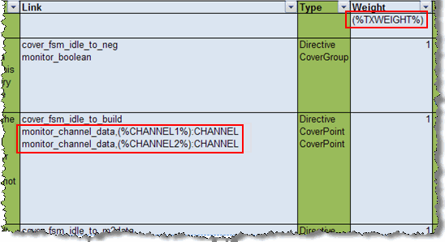

You can re-use
instance-based testplans. This method of reuse — parameterized testplans
— is most useful when dealing with IP, VIP, or for re-use within projects.
Parameters can be applied within the testplan source and the values
for these can be over-ridden for different uses of the IP, for example
testplans for the Mentor Graphics VIPs or Questa Verification IP.
Procedure
- Place the necessary parameters in the testplan
source (such as Excel or Word) For example, Figure 1 shows an Excel testplan with parameters
in the Link and Weight columns.
Figure 1. Testplan with Parameters
- Export the testplan to XML.
See Exporting a Plan to XML for details.
- Specify the values for the
parameters using any of the following three methods, listed in order
of precedence from highest to lowest:
Apply -G<var>=<value>
arguments to the xml2ucdb command, such as:
-GCHANNEL1=chana -GCHANNEL2=chand -GTXWEIGHT=2 -GBINWEIGHT=0
Place the values in a file
that is specified by the xml2ucdb command’s -varfile argument:
xml2ucdb -varfile <file>
where <file> contains a list of <variable>=<value>
entries, one per line:
CHANNEL1=chana
CHANNEL2=chand
TXWEIGHT=2
BINWEIGHT=0
Using the “varfile” setting
within the xml2ucdb.ini file,
such as:
varfile=path/myvarfile
where myvarfile
contains the following variables and values:
CHANNEL1=chana
CHANNEL2=chand
TXWEIGHT=2
BINWEIGHT=0
- Import the XML testplan into Questa SIM as instructed
in Importing an XML Verification Plan, or the xml2ucdb command.
Results
Once you have completed importing
the testplan, you will have unique testplans, each with their own
channels and weights.